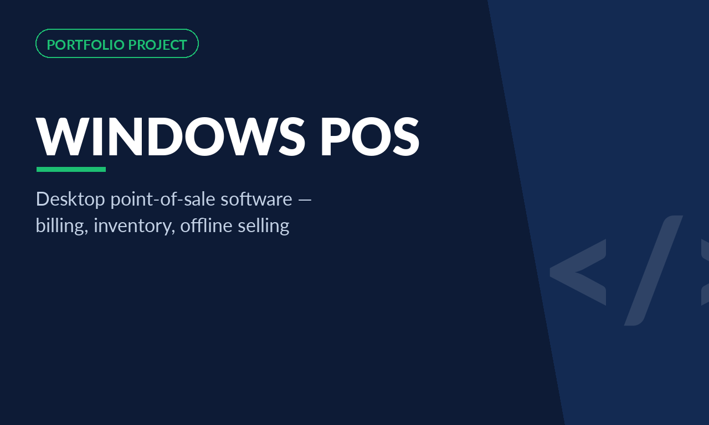
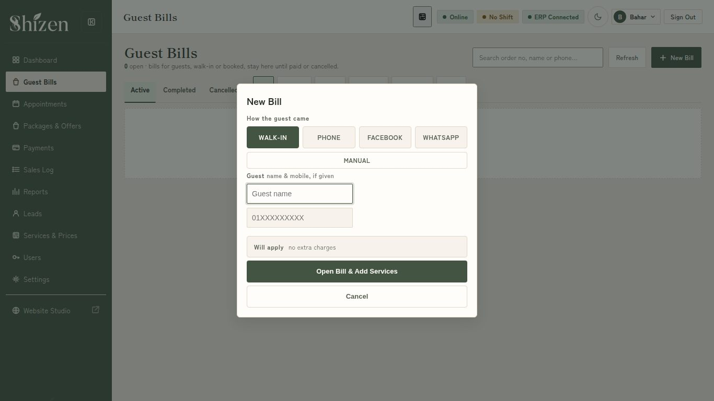

Point-of-sale software I designed and built for the counter: fast billing, offline selling with automatic sync, inventory, shifts and reporting. In production today at Sushi Yaki and, in its current Tauri generation, at Shizen.

A point-of-sale system has one unforgiving requirement: it cannot stop. When the internet drops in the middle of a dinner service or a retail rush, the counter still has to bill. The Windows POS software I build is designed around that moment — fast billing on the counter PC, and reliable operation whether or not the connection is alive.
The software covers the full counter workflow: opening bills, adding items from a structured catalog, discounts and offers, payments, and end-of-day reporting, with inventory moving as items sell. Because it is offline-capable, sales continue locally and sync with the web ERP when the connection returns, so the business's numbers stay whole without the counter ever waiting on the network.
This POS line runs in production in two forms today. At Sushi Yaki it works alongside the web ERP as the counter system for a multi-channel restaurant. At Shizen, the current generation ships as a Windows desktop application built with Tauri, against the same Frappe backend as the web POS — one catalog, one set of prices, two selling surfaces, with staff roles and shift handling on both. I design the billing flow for the person actually standing at the counter: few clicks, large targets, no dead ends.
The sync model is deliberately conservative: the counter's local record is the source of truth for the sale, and the ERP reconciles against it — never the other way round. A bill taken during an outage is a real bill with a real number, and it appears in the owner's reports exactly once when the connection returns.
